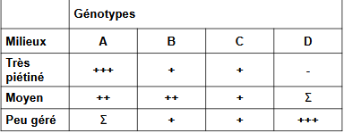

Relations entre paramètres biologiques et populationnels
Description des populations permet de décrire les variables démographiques liées à ces populations :
- strcture démographique = variables d'état
- densité
- sex ratio
- structure d'âge..
- diversité interne
- polymorphisme phénotypique
- diversité génétique
- variables dynamiques
- taux de croissance
- taux de reproduction
Cycle de vie d'un organisme directement lié à ces traits contribuant à sa survie et sa reproduction -> donne une valeur sélective à l'orgnisme = fitness darwinienne
Variables démographiques également liées à l'environnnement :
- présence ou non de prédateur
- présence ou non de compétiteur
- resssources du milieu = K
Variables également liées aux paramètres biologiques de l'organisme :
- paramètres morphologiques (taille, poids ..)
- paramètres physiologiques (longévité, maturité sexuelle, fécondité...)
- paramètres écologiques
Existe des combinaisons entre les caractéristiques :
- morphologiques
- physiologiques
- éthologiques
- écologiques
- démographiques
Les combinaisons sont :
- variables et complexes
- appelées dans une perspective évolutionniste = stratégies ou tactiques
Combinaisons réunissent des traits fonctionnant et évoluant ensembles -> traduisent l'adaptation de la population à son environnement
Paramètres subissent des contraintes internes et/ ou externes
- présentent donc des fluctuations
- impliquent une sélection des traits les plus favorables à la situation -> notion de compromis ou de choix -> trade off
Illustration :
Le maintien d'une espèce dans son environnement dépend :
- survie
- reproduction
Directement liés aux besoins en matière et en énergie
Energie directement alllouées aux différentes fonctions vitales
Si une contrainte s'éxerce sur le milieu -> énergie initialement disponible peut être limitée (abondance de proies, temps d'ingestion...)
Modification de l'allocation de l'énergie -> énergie allouée à la reproduction plutôt qu'à la croissance ou aux dépenses d'entretien
-> implique un choix ou un compromis
Fonctions vitales d'un organisme sont liées à :
- acquisition de ressources
- la mise en réserve
- la régénération de l'espèce
Ainsi :
Stratégies = combinaisons particulières de caractères conduisant à la meilleure valeur adaptative pour l'espèce ou la population
Ex : plantes annuelles placées dans des conditions déterminées et identiques chaque année (ressources suffisantes pour se développer et se reproduire)
Hypothèse de croissance : génotype investit toutes les réserves dans la croissance somatique :
- plante vigoureuse de grande taille
- incapable de se reproduire
- valeur sélective nulle : espèce ne peut se maintenir, dans les faits la sélection naturelle aura éliminé cette plante
En fait, valeur sélective (W) va croître avec l’augmentation progressive de la proportion de ressources allouée à la production de graines
- augmentation jusqu’à un maximum = stratégie optimale
- au delà de ce max. : la plante ne peut se maintenir car taille trop frêle
D'un point de vue évolutionniste :
" La sélection naturelle devrait favoriser les génotypes qui, entre les différentes stratégies possibles, adoptent celles qui leur confèrent de génération en génération le taux de multiplication (= valeur sélective) le plus important "
Les traits bio-démographiques sont donc des ensembles de traits co-adaptés, modelés par le jeu de la sélection naturelle pour résoudre des problèmes écologiques particuliers -> Profil bio-démographique d'une population = expression de l'adaptation de l'organisme à son environnement
- Optimisation de la valeur sélective de l'organisme sous l'influence de la sélection naturelle
- Les traits sont interdépendants
Remarque : L'idée de contrainte de l'environnement implique que tout n'est pas réalisable pour un organisme -> compromis d'adaptation n'est pas toujours possible
I) Stratégies liées à la reproduction
Relation taille des organismes et temps de génération -> temps de génération court favorise des tailles réduites et une maturité sexuelle précoce
Taille des pontes
-
Poissons et batraciens : chez plusieurs espèces le nombre d'oeufs produit est limité par la capacité abdominale de la femelle
-
Anoures : chez certaines espèces, il existe une relation entre volume de ponte et longueur de la femelle, interdépendance entre un trait morphologique (taille) et un trait physiologique (fécondité) chez toutes les espèces considérées. Relation également entre taille de la ponte (nombre d'oeufs) et le diamètre d'un oeuf
Des différences sont observées selon les espèces :
- petits oeufs pour en faire le plus possible (généralement mortalité importante)
- gros oeufs pour maximiser la probabilité de survie (avantage compétitif pour l'exploitation des ressources et pour l'évitement des prédateurs)
La valeur sélective dans ce cas dépend du nombre de descendants susceptibles de se reproduire
- nécéssité d'un compromis entre nombre et taille
- compromis également lié à la pression extérieure et aux contraintes propres des organismes
Stratégie démographique chez le pissenlit :
3 cultures de 3 populations de milieux différents :
- 1 pelouse fortement piétinée et souvent tondue = mortalité élevée indépendante de la densité
- 1 pelouse moins piétinée et tondue moins régulièrement
- 1 pelouse peu gérée où la mortalité élevée est densité dépendante
Analyse des phénotypes et génotypes liés (polymorphisme enzymatique par électrophorèse)
On a 4 identifié types :
